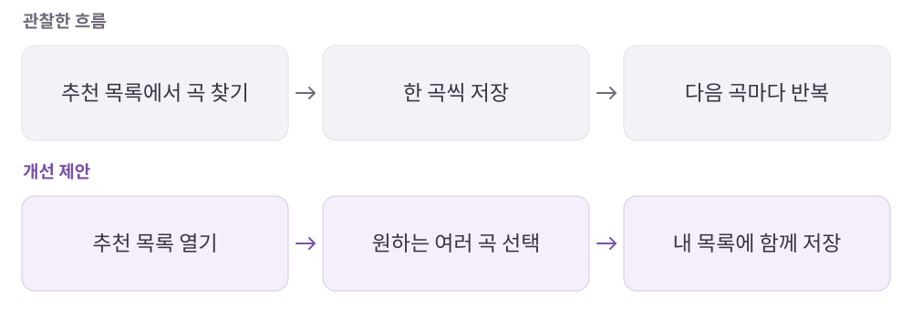

유튜브 뮤직
추천은 자동이어도, 내 취향의 결정권은 남아야 한다.
추천 음악과 영상 기반 콘텐츠를 함께 즐기는 음악 스트리밍 서비스.
개인 학습 기록 · 원문에 기록한 당시의 경험을 재구성했습니다. 기획 의도는 개인 해석이며 개선안·확인 지표는 검증 전 제안입니다.
01사용자와 해결 방향
누구를 위한 서비스인가새로운 음악을 발견하면서도 자신이 원하는 곡과 재생 흐름을 통제하고 싶은 청취자.
Why · 사용자의 필요
비슷한 음악을 일일이 찾기 어렵고, 영상으로만 있는 음악을 듣기 위해 앱을 오가고 싶지 않다.
What · 서비스의 답
추천 재생목록에서 곡을 발견하고, 음원·영상 전환과 저장으로 개인의 청취 경험을 만든다.
02핵심 기능과 벤치마킹
- 추천 재생목록
- 직접 검색하지 않아도 비슷한 취향의 음악을 발견.
- 음원·영상 전환
- 같은 콘텐츠를 듣거나 보는 방식으로 전환.
- 나만의 목록
- 추천된 음악을 자신의 취향에 맞게 골라 저장.
03사용자 흐름과 기획 의도
곡을 하나씩 담는 반복을 줄이는 제안

관찰한 경험
- 유사 음악 추천과 영상·오디오 전환이 탐색 부담을 줄이는 방식을 살펴봤습니다.
- 곡의 복수 선택, 이전 추천 목록으로 돌아가기, 원하지 않는 추천 제외에서 불편을 기록했습니다.
왜 이렇게 설계했을까 · 나의 해석
- 추천이 편리해질수록 마음에 드는 것만 남기고 원치 않는 것을 조절하는 기능도 중요해진다고 봤습니다.
- 개인화는 시스템이 골라주는 정확도뿐 아니라 사용자가 취향을 수정할 수 있는 경험이라고 정리했습니다.
04문제와 개선 제안
Pain Point · 걸리는 지점
- 원하는 여러 곡을 한 번에 선택해 저장하기 어려웠다.
- 다른 음악으로 이동하면 직전 추천 트랙의 맥락으로 돌아가기 어려웠다.
- 유사 음악이나 아티스트를 제외하는 피드백이 부족하다고 느꼈다.
내가 바꿔본다면
- 원하는 곡을 복수 선택해 저장할 수 있는 동선.
- 이전 추천 트랙으로 돌아가기와 유사 음악·아티스트 관심 없음 피드백 제공.
확인할 지표 · 검증 계획 제안
목록 저장에 필요한 반복 횟수, 이전 추천 복귀 성공률, 관심 없음 이후 추천 만족도를 확인한다.
05장점과 아쉬운 지점
좋았던 점
- 새로운 곡 발견과 영상·음원 이동이 유기적이다.
아쉬운 점 · 더 살필 점
- 추천이 편리해도 저장·되돌리기·제외 같은 사용자의 결정권이 필요하다.
06내가 주목한 점
- 개인화 서비스에서는 추천의 정확도와 사용자가 수정할 수 있는 범위를 함께 설계할 것.
- 재생 목록의 이력과 현재 상태를 복구하는 기준을 구분할 것.
분석 원문유튜브 뮤직 · 노션 원문 ↗